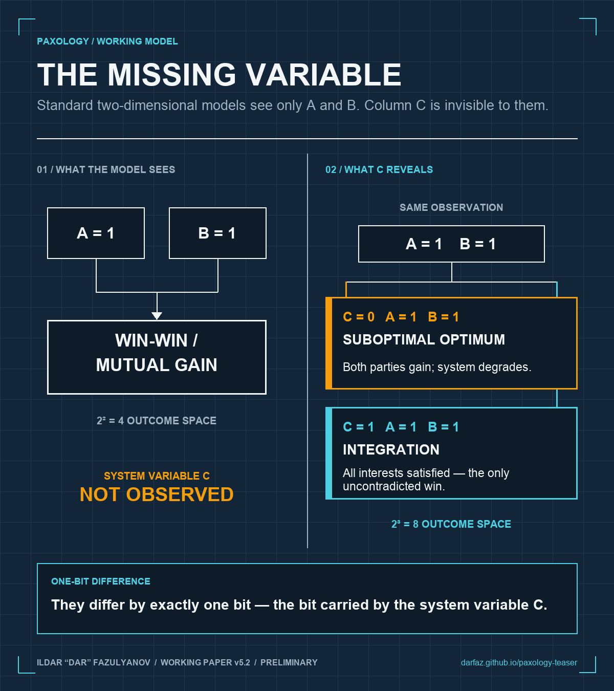

A standard two-party model has a simple way to score an outcome. Did Party A gain? Did Party B gain? If both answers are yes, the outcome is called win-win, mutual gain, cooperation, or private Pareto improvement.
That classification may be correct inside the private payoff space. It can still be wrong about the shared system.
Two banks can benefit from manipulating a benchmark. Two sellers can benefit from holding a price line. Two AI agents can coordinate in a way that raises their measured rewards. In each case, A and B may both gain while market integrity, consumer welfare, or the institution making those gains possible deteriorates.
Both parties can win on the measured dimension while losing part of the system they depend on.
The missing bit
The working paper adds a third variable, C, for whether the surrounding system is served or degraded. C is a state variable, not a third player. It represents the institutional, environmental, or organizational context in which A and B act.
Extended model: (C, A, B) → 2³ = 8 outcomes
The extra bit separates two outcomes that look identical in the ordinary two-party model:
C=1, A=1, B=1 is Integration. Both parties gain and the system is preserved.
C=0, A=1, B=1 is Suboptimal Optimum. Both parties gain while the system degrades.
They differ by exactly one bit, the bit carried by C. If a model observes only A and B, it cannot make the distinction.

When the missing bit cannot be reconstructed
The paper’s stronger claim is conditional. Suppose two strategy profiles can produce the same operative private payoffs for every agent but different levels of system welfare W. Under that non-reducibility condition, no function of the private payoff vector can recover W for every case.
This is an information problem before it is an incentive problem. A perfectly designed mechanism cannot act on information that does not exist in its message, audit, or objective space. If a dashboard records only the local payoff channel, improving the dashboard’s formulas does not create the missing system signal.
The repair requires an independent W-channel: outcome evidence that touches the system variable rather than reconstructing it from the optimizer’s own activity.
Why this matters for AI inside companies
An AI agent usually has a local objective it can measure and report. Faster cycle time. More tickets closed. Higher conversion. Lower labor cost. The local result may be real.
The firm still has to ask where the cost moved. Did downstream rework rise? Did another team absorb exceptions? Did customer harm increase outside the agent’s evaluation window? Did the organization lose information, resilience, or trust that the local scorecard does not price?
Systemic Value is the organizational implementation layer of this research. It evaluates a part by the value it creates for the parts it serves, minus the value it destroys within them, net of its own cost. The point is not to add a moral score to an ROI calculation. The point is to measure outcomes at the boundary where the cost actually lands.
What the paper does not prove
The formal result is not a universal theorem about every game. It applies under stated assumptions, including a global Private-Systemic Tension condition. If a feasible private improvement preserves or improves W, that condition is falsified for the game. The case is not a trap outcome.
The formal system and counterexample witnesses have passed symbolic and numerical machine prescreening. They have not been reviewed by a human mathematician. The empirical crossover estimates also carry disclosed calibration ranges rather than settled point values.
I am publishing the work because it needs contact with criticism and operating evidence. Confidence should follow that contact, not precede it.
What I want from readers
If you work in game theory, economics, AI evaluation, or organizational design, identify the weakest assumption or the counterexample that breaks the model.
If you operate AI inside a company, bring one workflow where a local metric is improving and the downstream result is uncertain. The useful question is concrete: what outcome would have to be measured outside the agent’s own logs to determine whether the firm is actually better off?